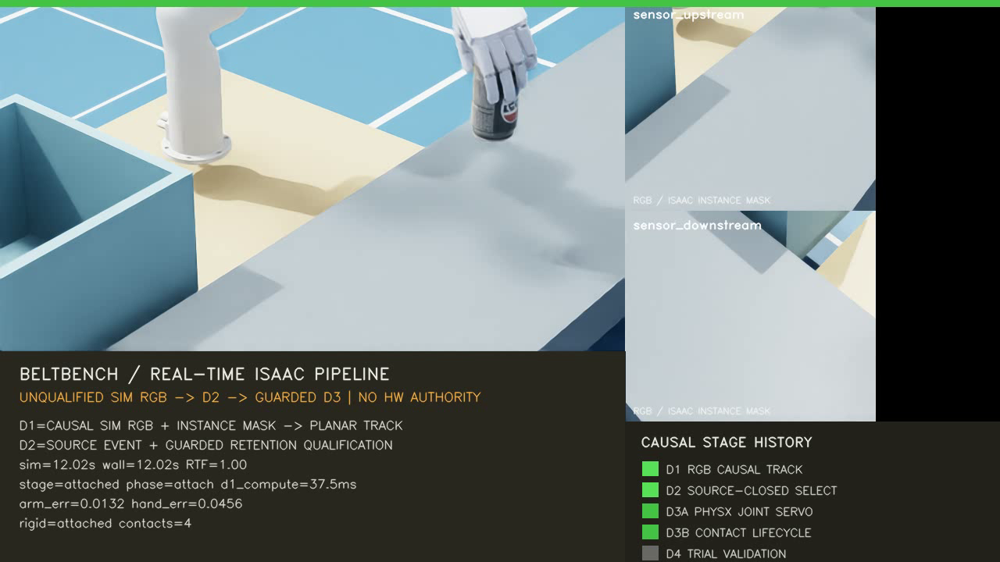
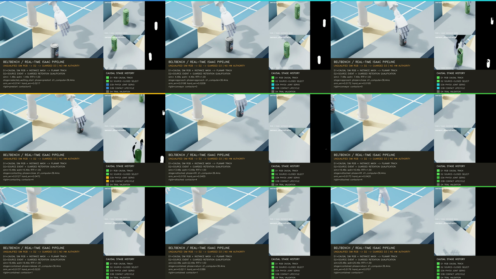

RGB-only perception부터 guarded grasp, 이송, release와 bin containment까지 실제 시간으로 연결한다.
ISSUE-087에서 정의한 D3b를 RTX 3090의 Isaac Sim 4.5에서 실행한 뒤, 물리 카메라가 RGB-only라는 전제를 반영해 D1을 다시 설계했다. 최신 r212은 두 synchronized RGB에서 얻은 초기 planar pose를 exposure 시각의 encoder state에 결속하고, 독립 60 Hz encoder로 constant-yaw translation을 계속 전파한다. 선택 후 correction envelope와 bounded asynchronous JSONL trace까지 실제 제어 시간축에서 측정해 exact D2 selection과 measured D3를 구동한다. FoundPose는 동일 provider-neutral 계약의 후보로 남지만 renderer variation에서 yaw가 불안정해 현재 기본 simulation demo path에서는 제외했다. 과거 r153-r163의 RGB-D 경로는 재현 가능한 역사적 진단으로만 남기며 현재 물리 카메라 방법론의 증거로 사용하지 않는다.
r212은 integrated_simulation_diagnostic_complete=true, declared_scope_ready=true, D1-driven D2 selection, 독립 encoder/state estimation, 615회 identity correction, guarded contact, attachment, release, containment와 1,620-tick trace reconciliation을 만족했다. Canonical 14단계 중 12단계가 independently measured이고 deadline miss는 0이지만 resident online collision commit과 future-start controller lease는 아직 실행되지 않았다. Simulation mask-plane position, instance segmentation과 guarded command 수정도 qualification되지 않았다. 따라서 integrated_simulation_ready=false, complete_soft_realtime_pipeline=false, professor_demo_ready=false, hardware_execution_authorized=false다. 아래 영상은 최종 grasp 성공률 증거가 아니라 실제시간 RGB-only 통합 진단이다.2026-08-26 canonical RGB-only source 경계 전환: ca23136
문제와 영향
r212 실행은 observed depth 없이 RGB와 object mask만 사용했지만, 실행 바깥의 canonical source에는 depth sensor 기본 활성화, 최상위 perception package의 RGB-D export, historical RGB-D bundle을 읽는 FoundPose qualification 도구가 남아 있었다. minimum_depth_m도 실제 depth measurement가 아니라 CAD point를 camera frame으로 변환한 뒤의 projective Z near-plane guard였으므로 이름이 권한을 잘못 전달했다. 이 상태에서는 새 개발자가 legacy adapter를 현재 physical-camera 경로로 선택하거나, depth가 포함된 과거 yaw bank를 RGB-only qualification 증거로 재사용할 수 있다.
원인과 해결
원인은 simulation demo의 D1 backend만 먼저 RGB로 교체하고 sensor 초기화, public API, capture producer와 qualification consumer를 하나의 modality 계약으로 함께 닫지 않은 데 있었다. 실패를 숨기기 위해 depth를 0으로 채우거나 RGB-D type을 유지하는 fallback은 추가하지 않았다.
- Isaac sensor 초기화는 기본
enable_depth=false이며, current path는read_calibrated_rgb_observation만 사용한다. Depth가 필요한 두 historical diagnostic만 명시적으로 opt-in하고 API 이름에도legacy_rgbd를 표시했다. - Canonical
beltbench.perceptionexport에서 RGB-D observation, backprojector와 depth-mask estimator를 제거했다. Legacy module은 재현을 위해 직접 import할 수 있지만 current pipeline의 자동 선택 대상은 아니다. - Yaw capture는 RGB, object mask, 정확한 intrinsics/extrinsics만 담는 native bundle을 생성한다. Current FoundPose onboarding, inference, worker smoke, planar/temporal qualification과 replay는 모두 같은 depth-free runtime view adapter를 소비하고, capture report가
["rgb", "object_mask"]가 아니거나observed_depth_used=false가 아니면 fail-closed한다. - Planar correspondence policy를 schema
1.1로 올리고minimum_depth_m을minimum_camera_z_m으로 교체했다. 이는 sensor depth가 아니라 projection 전 CAD point의 camera-frame Z guard다.
검증과 증거 경계
- Source
ca23136에서 로컬 전체 suite는1,364 passed,22 skipped로 종료됐다. - RTX 3090 worktree를 같은 revision으로 fast-forward한 뒤 RGB wiring과 bundle focused suite 51개가 통과했다. Server probe는 schema
1.1,minimum_camera_z_m=0.05, canonical RGB-D export 부재와 schema1.0legacy payload 거부를 확인했다. r212영상과 report는 sourcea190254의 RGB-only actual-time diagnostic으로 계속 유효하다. 그러나ca23136의 source-closed 실행 증거는 아니며, 과거r211admission도 새 source에 재사용하지 않는다.- 다음 실행은 native RGB yaw capture campaign, qualification, 새 source-closed admission, actual-time Isaac trial과 video를 순서대로 생성해야 한다. 그 전까지 이번 결과는 interface/modality wiring verified이며 perception 정확도나 professor-ready 영상 verified가 아니다.
2026-08-26 독립 encoder, correction, async trace 통합 진단: r212
r212 · diagnostic only · 1280×720 · 15 fps · 405/405 frame · 27.000 s · SHA-256 b8d55c627579a088c1a2f008af9139ec796c7f6dbac8939a594f25d5eecd3eb9

문제와 영향
r200은 RGB pose가 D2를 구동했지만 selection 이후 물체 상태가 최신 encoder tick으로 계속 전파되는지, 선택된 command가 correction tube 안에 남는지, 60 Hz evidence 기록이 control deadline을 오염하지 않는지 증명하지 못했다. Report는 1,620개의 full track payload를 메모리에 쌓아 약 3.89 MB가 됐고, post-trial JSON serialization은 canonical evidence_publisher로 볼 수 없었다. 이 상태에서 평균 RTF만 보고 실시간 pipeline이라고 부르면 perception time ancestry와 기록 지연을 숨기게 된다.
수정한 실제시간 모듈 경계
15 Hz synchronized RGB exposure -> exposure timestamp와 일치하는 bounded encoder history lookup -> initial planar [x, y, yaw] acquisition and exact ancestry gate 60 Hz independent conveyor encoder -> constant-yaw track translation propagation -> selected event identity-correction envelope -> measured articulation feedback and rigid lifecycle -> immutable small EventRuntimeTraceSnapshot -> nonblocking bounded enqueue background worker -> snapshot validation -> JSONL serialization -> fsync -> atomic rename -> submitted == persisted == control ticks, drop == 0, SHA-256 binding
Camera generation과 encoder sequence를 같은 숫자로 강제하지 않는다. Camera는 exposure timestamp, calibration ID와 clock domain으로 encoder history를 조회하고, encoder는 physics/control tick마다 독립 증가한다. Trace control path는 작은 scalar/tuple snapshot 생성과 put_nowait만 수행한다. Validation, payload expansion, JSON serialization과 file I/O는 worker가 소유한다. Queue drop, worker failure, sequence gap 또는 count mismatch는 run을 fail-closed한다.
실패를 보존한 r202-r212 계보
| Run | 직접 관찰 | 원인, 해결과 결과 |
|---|---|---|
r202 | Camera frame과 latest encoder의 timestamp/identity가 달라 causal ancestry가 거절됐다. | Camera가 직전 render tick에 노출됐는데 sensor edge가 현재 encoder만 읽었다. Float equality를 느슨하게 하는 대신 독립 encoder history 계약을 도입했다. |
r204 | Camera measurement 1.5333 s와 current encoder 1.5500 s가 계속 달랐다. | 1 ns numerical tolerance만으로는 실제 한 tick 차이를 해결할 수 없음을 확인했다. Exposure timestamp의 exact historical state를 bounded lookup하도록 수정했다. |
r206 | RGB pose and conveyor ancestry differs로 선택 직전에 중단됐다. | Camera generation과 encoder sequence가 같은 counter를 공유해야 한다는 잘못된 결합이 남아 있었다. 두 sequence를 분리하고 timestamp/calibration/clock-domain ancestry만 결속했다. |
r208 | 독립 60 Hz encoder와 연속 state estimation이 D1-D3 전체를 구동해 grasp, release와 containment를 완료했다. | Temporal ancestry 수정이 기능적으로 닫혔다. Correction, collision, handoff와 evidence publisher는 당시 not_executed로 유지했다. |
r210 | 615/615 identity correction이 accepted됐고 p95 0.0299 ms, max 0.0340 ms였다. | 선택된 command와 current track의 longitudinal, timing, lateral, yaw, belt-speed residual을 contact 전 60 Hz로 감시했다. Nonzero correction은 아직 materialize하지 않고 stop/no-pick한다. |
r212 | 1,620개의 immutable trace가 drop 없이 persisted되고 control-path publisher p95 0.0350 ms, max 0.0606 ms였다. | Canonical evidence publisher가 실제 실행됐다. Full propagation은 JSONL로 외부화하고 main report에는 first/latest만 남겨 report를 약 3.89 MB에서 1.07 MB로 줄였다. |
r212 실제시간 측정
| 항목 | 측정 | 판정 |
|---|---|---|
| Physics/control | 60 Hz, simulation 27.000 s, wall 27.000068 s, RTF 0.999997 | 평균 actual-time pacing 통과. Hard real-time 주장은 하지 않는다. |
| Wall/physics tail | Wall p95 16.669 ms, max 159.677 ms, one-period lateness 82회; physics p95 20.387 ms | 평균 RTF와 60 Hz worst-case guarantee는 다르다. Tail latency는 그대로 blocker로 보존한다. |
| RGB D1 | Sensor 3.401 ms, yaw provider 34.977 ms, planar fit 0.917 ms, total acquisition 36.182 ms | 15 Hz one-shot 80 ms budget 안. Physical RGB accuracy/segmentation qualification은 아님. |
| Encoder/state | 1,621 samples, encoder p95 0.0313 ms, state estimation p95 0.2499 ms | 독립 60 Hz translation propagation deadline 통과. |
| Correction | 615 samples, p95 0.0297 ms, max 0.0340 ms; 최대 timing residual 8.88e-16 s, 나머지 0 | Identity tube 유지 증거. Nonzero online correction capability는 아직 없음. |
| Feedback/lifecycle | Feedback 1,620 samples p95 0.1689 ms; lifecycle 1,383 samples p95 4.104 ms, max 4.880 ms | 각 2 ms/5 ms deadline 통과, miss 0. Guarded assistance 범위는 유지. |
| Evidence publisher | 1,620 submit/persist, drop 0; control p95 0.0350 ms, max 0.0606 ms; worker p95 0.0797 ms | 0.5 ms control budget 통과. Worker drain 후 count와 digest를 report에 결속. |
| Video | MPEG-4, 1280×720, 15 fps, 405 frame, 5,293,292 bytes | 27초 전체 stage/lifecycle diagnostic. Professor-ready 또는 hardware authority가 아님. |
검증과 재현 경계
- Source
a190254에서 로컬 전체 suite1,356 passed,22 skipped, RTX focused suite 30개가 통과했다. - r211 source-closed admission은 1,590-frame request/validation과 15개 runtime source를 다시 검증했다. Startup validation은
0.954580 s, 1,000-query selector p95는0.053111 ms였다. - r212 report SHA-256은
d918e9a4bc93597892bb58becc37d44de40f927740bb5067cf5bc7f209ee3712, MP4 SHA-256은b8d55c627579a088c1a2f008af9139ec796c7f6dbac8939a594f25d5eecd3eb9다. - 1,620-line JSONL trace는
1,580,164 bytes, SHA-2567655e738970624ae57fbaed02ab4b1a03e16121e3574d4224b0fa2bea916d189이며 report의 digest와 일치한다. - Canonical 14단계 중 measured 12개, deadline-missed 0개다.
command_collision_gate와controller_handoff만not_executed로 남는다.
2026-08-26 split RGB backend 통합 진단: r200
r200 · diagnostic only · 1280×720 · 15 fps · 405/405 frame · 27.000 s · SHA-256 7c5d8a0ff8cc7d0622aea9527407c040a1e652a4c2efe397a58dc00dbfafed20

왜 FoundPose를 성공할 때까지 재실행하지 않았는가
| Run | 직접 관찰 | 원인과 결정 |
|---|---|---|
r196 | FoundPose pose 자체는 position 1.075 mm, yaw 0.01424 rad로 정확했지만 D2가 camera yaw disagreement 0.1794 rad를 거절했다. | D1 development gate는 0.25 rad인데 D2 duplicate gate는 0.10 rad였던 source contract 불일치였다. D1 gate를 다시 느슨하게 하지 않고, simulation diagnostic 전용 D2 policy를 같은 0.25 rad에 결속하고 startup fail-fast compatibility 검사를 추가했다. |
r198 | 중복 gate 불일치는 해소됐지만 FoundPose yaw error가 0.11872 rad로 D2 event_yaw_unsupported에 걸렸다. Provider는 304.5 ms, solver는 48.45 ms였다. | r196과 r198의 mask, intrinsic, extrinsic은 byte-identical이었고 RGB만 camera별 약 0.63-0.65/255 MAE만큼 달랐다. 작은 renderer variation이 FoundPose yaw basin을 바꿨다. Seed를 고정해 물리 카메라 변동을 숨기거나 성공할 때까지 반복하지 않고, 실패를 보존하고 simulation 기본 path를 교체했다. |
r200 | Sealed 72-yaw RGB bank가 yaw를, 동일 generation의 두 mask와 calibrated ray-plane intersection이 위치를 추정했다. D1과 D2가 첫 generation을 수락하고 전체 guarded lifecycle이 완료됐다. | Yaw와 position backend identity, revision, camera ancestry, covariance와 timing을 하나의 provider-neutral 계약에 분리 기록했다. Yaw component만 simulation-qualified이며 mask-plane position은 diagnostic으로 유지한다. |
r200 측정 결과
| 항목 | 측정 | 판정 |
|---|---|---|
| RGB planar pose | Translation 4.121 mm, yaw 0.00657 rad; camera position disagreement 8.181 mm | Simulator truth는 selector에 들어가지 않고 사후 evaluator로만 사용했다. Position accuracy는 아직 holdout qualification이 아니다. |
| D1 timing | Sensor 2.665 ms, yaw hypothesis outer wall 34.098 ms, mask-plane fit 0.931 ms, acquisition gate 0.170 ms, total 35.332 ms | 15 Hz one-shot D1의 80 ms total budget 안이다. FoundPose worker warm-up과 300 ms acquisition을 demo critical path에서 제거했다. |
| D2 | Motion projection 0.085 ms, resident decision 0.029 ms, reason code 없음 | Source-closed prevalidated command 선택은 병목이 아니다. Online collision commit은 이 run에서 실행되지 않았다. |
| Control pacing | 60 Hz physics, simulation 27.000 s, wall 27.00010 s, RTF 0.999996 | Actual-time 평균 pacing 통과. 60 Hz period를 넘은 tick 55개와 max lateness 155.7 ms를 보존하므로 hard real-time 주장은 금지한다. |
| Lifecycle | Contact 10.283 s, attach 10.617 s, release 18.483 s, contained 19.150 s; contact geometry 최대 5개 | Guarded retention diagnostic은 통과했다. Natural force closure 또는 source-unmodified hand command 증거는 아니다. |
| Video | 405 submit/encode, drop/error 0, 15 fps, 5,296,141 bytes | Report와 local copy SHA가 일치하며 색상 stage history는 실제 event transition을 표시한다. |
현재 canonical pipeline에서 실제로 비어 있는 단계
r200은 sensor ingress, RGB pose hypothesis, planar fit, acquisition gate, motion projection, resident decision, controller feedback과 lifecycle monitor를 측정했다. 반면 아래 단계는 report에서 not_executed다. 평균 RTF가 1.0이라는 이유로 이 빈 단계를 실행했다고 간주하지 않는다.
- 독립 60 Hz encoder ingress와 acquisition 이후 연속 state estimation
- Bounded correction envelope
- Resident online command collision commit gate
- Future-start immutable controller handoff lease
- Bounded asynchronous evidence publisher
2026-08-25 RGB-only 통합 진단: r194
r194 · diagnostic only · 1280×720 · 15 fps · 406/406 frame · 27.067 s · SHA-256 14ad68b0ae88a2159a555c75f36f3cfb48ed0d96e23468f2f54ae57af08a4dee
우측 두 패널은 depth 없이 RGB와 Isaac instance mask만 표시한다. 색상 history는 D1 RGB causal track, D2 source-closed selection, D3a measured PhysX servo, D3b contact lifecycle, D4 diagnostic validation의 전환을 실제 presentation tick에 맞춰 보여준다. 캔은 belt 상류에서 들어와 upside-down stable pose와 일정 yaw를 유지한 채 평행이동하고, contact-confirmed guarded close 뒤 이송되어 넉넉한 bin 안으로 release된다.
문제와 영향
물리 장비가 RGB camera인데 이전 최신 영상과 여러 설계 문서는 RGB-D depth/CAD translation을 D1 위치 관측으로 사용했다. 이 상태에서 simulation 영상을 통과시켜도 실제 장비에는 같은 입력 modality가 없으므로 adapter 교체만으로 이식할 수 없고, depth fallback이 calibration 또는 pose 실패를 가리는 구조가 된다. 단순히 depth 배열을 0으로 채우는 수정은 interface와 권한 오인을 남기므로 채택하지 않았다.
수정한 모듈 경계
synchronized rectified RGB + explicit segmentation capability -> FoundPose RGB-to-CAD 2D/3D correspondences -> known stable pose + calibrated belt-plane joint fit [x, y, yaw] -> quality / disagreement / covariance / deadline gates -> exact measurement-time encoder registration -> 60 Hz constant-yaw translation propagation -> bounded resident D2 selection -> measured D3a servo + D3b guarded contact lifecycle simulation-only edge: Isaac instance mask physical edge required: qualified RGB segmentation + camera synchronization forbidden fallback: observed depth or simulator ground truth
Planner는 계속 FusedPlanarObjectTrack만 소비하므로 Isaac RGB와 물리 RGB를 구분하지 않는다. FoundPose crop의 correspondence는 source image intrinsic과 같지 않기 때문에 crop camera matrix는 그대로 solver에 전달하고, 별도 source calibration SHA-256으로 원본 RGB ancestry만 검증한다. Object identity와 stable tabletop pose는 사전에 주어지며, belt 위에서는 초기 위치와 yaw만 RGB로 측정하고 이후 yaw rate를 0으로 둔다.
실패와 원인, 해결 계보
| Run | 직접 관찰 | 원인과 해결 |
|---|---|---|
r182-r183 | Depth array를 읽지 않는 12-view replay에서 최대 위치 오차 3.321 mm, yaw 오차 0.1295 rad, acquisition p95 356.7 ms였다. Strict gate는 6/12만 받았다. | 정확한 joint fit도 camera별 yaw disagreement 0.10 rad에서 거절되어 low recall임을 확인했다. 이 gate 하나만 0.25 rad로 올린 simulation integration policy를 별도 development 경로에 두고 qualification과 분리했다. |
r185 | Reject된 duplicate generation에 encoder timing이 항상 존재한다고 assert해 algorithm 전에 중단됐다. | Rejected sensor generation은 timing을 만들지 않는 것이 정상이다. Optional timing을 그대로 보존하고 rejection trace가 계속 흐르도록 고쳤다. |
r187 | FoundPose response가 response_ancestry_mismatch로 거절됐다. | Crop correspondence intrinsic을 source camera intrinsic과 같다고 잘못 가정했다. Crop matrix와 source calibration fingerprint의 역할을 분리했다. |
r189 | 실제 Isaac RGB에서 FoundPose 350.8 ms, pose 오차 약 1.3 mm / 0.0126 rad였지만 strict camera-yaw gate가 거절했다. | Strict policy는 변경하지 않고 negative evidence로 보존했다. 앞서 분리한 development integration policy만 후속 통합 run에 사용했다. |
r190 | 12/12 replay가 diagnostic gate를 통과했고 provider p95 267.8 ms, solver p95 89.7 ms, total p95 345.4 ms였다. | Depth-free integration 가능성만 확인했다. Historical capture에 depth key가 있다는 이유로 qualification으로 승격하지 않았다. |
r192 | RGB D1, grasp, attachment, release, containment과 406-frame 영상은 완료됐지만 --require-ready가 failure record를 남겼다. 영상 패널도 depth가 없는데 RGB-D로 표시됐다. | Source-unmodified authority와 guarded diagnostic completion이 하나의 boolean에 섞여 있었다. 두 readiness를 분리하고 실제 panel modality에 따라 라벨을 생성하도록 수정했다. |
r194 | Failure record 없이 declared RGB diagnostic scope를 완료했다. D1부터 D4까지 실제 단계 색상과 406/406-frame MP4가 일치했다. | Source-closed readiness는 계속 false로 유지하면서, guarded contact·servo deadline·lifecycle·containment을 모두 통과한 별도 non-authoritative readiness만 true로 판정했다. |
r196/r198 | FoundPose 결과가 renderer variation에 따라 yaw gate를 통과하거나 실패했다. 동일 mask·calibration에서도 안정적인 demo backend가 아니었다. | 성공 run을 고르는 대신 provider-neutral split pose 계약을 만들고, sealed simulation yaw와 unqualified mask-plane position을 분리했다. |
r200 | Split RGB backend가 36.39 ms 안에 D1-driven D2를 완료하고 405/405-frame grasp/drop 영상을 생성했다. | Simulation diagnostic baseline은 갱신했지만 position, segmentation, guarded command와 canonical missing stage 권한은 계속 차단했다. |
r194 측정 결과
| 항목 | 측정 | 해석 |
|---|---|---|
| RGB planar pose | Translation 1.401 mm, yaw 0.01670 rad; simulator truth는 evaluator only | 해당 Isaac scene에서는 정확하지만 physical domain accuracy가 아니다. |
| Acquisition | FoundPose provider 280.38 ms, solver 42.28 ms, total 323.06 ms | 60 Hz inference가 아니라 upstream one-shot acquisition이다. 이후 pose는 encoder로 60 Hz 전파한다. |
| Control pacing | 60 Hz physics, simulation 27.050 s, wall 27.0501 s, RTF 0.999996 | Actual-time 평균 pacing 통과. 16.67 ms period를 넘은 tick이 96개라 hard real-time 주장은 금지한다. |
| Lifecycle | Contact 10.35 s, attach 10.68 s, release 18.55 s, contained 19.15 s | Measured PhysX lifecycle과 guarded retention qualification 통과. Natural force closure 증거는 아니다. |
| Video | 406 submit/encode, drop/error 0, 15 fps, MP4 5,302,408 bytes | 비동기 presentation이 control pacing을 막지 않았고 report-bound SHA와 local copy가 일치한다. |
역사적 RGB-D 진단: r153-r163
r153 · 1280×720 · 15 fps · 376 frame · 25.067 s · SHA-256 06676b7bd850435b46ebb25f5d0e50e6ae7bbc66b112a0cb3d7e21a47cb776d8
2026-08-25 causal D1-D3 follow-up: r163
r163 · diagnostic only · 1280×720 · 15 fps · 406/406 frame · 27.067 s · SHA-256 d5a23797159da2065001ed815938d8ed4dc48d9c39625a6aa171dab17f49797d
첫 인코딩 프레임은 stage=perception, D1 active, D2 inactive, d1_compute=pending를 표시한다. 다음 프레임은 D1과 D2를 complete로 바꾸고 measured compute 64.08 ms를 표시한다. 임의 pause를 넣지 않았고 같은 physics tick에서 렌더 snapshot을 먼저 제출한 뒤 sensor work를 실행했다. 따라서 stage 표시 해상도는 15 fps의 66.67 ms로 제한되며 report에 그 quantization과 latest-completed sensor panel age를 명시했다.
r156에서 발견한 영구 rejection
r156의 D1 위치 오차는 0.436 mm, yaw 오차는 0.0157 rad로 작았지만 D2는 event_track_uncertainty_exceeded로 즉시 거절했다. 원인은 estimator 실패가 아니라 policy 조합이었다. Acquisition position floor 1e-4 m²와 camera별 CAD covariance floor 4e-6 m²를 두 camera로 information fusion하면 가능한 최저 표준편차가 다음과 같다.
sqrt(1e-4 + 4e-6 / 2) = 0.0100995 m = 10.0995 mm old D2 lateral gate = 10.0000 mm
어떤 RGB-D 입력도 old gate를 통과할 수 없었다. Truth error를 보고 15 mm residual envelope까지 넓히지 않고, simulation-only provisional gate를 10.2 mm로 최소 교정했다. Admission compile과 runtime load 양쪽에 best-case D1 covariance floor와 D2 gate의 호환성 검사를 추가하여 같은 오류가 Isaac startup 이후에 발견되지 않게 했다.
r159-r163 검증 계보
| Run | 관찰 | 판정 |
|---|---|---|
r159 | 첫 causal D1-driven D2 selection과 guarded D3 full task가 RTF 0.99998에서 완료됐다. | 실행은 causal하지만 첫 presentation frame 전에 synchronous D1이 끝나 stage 전환이 보이지 않았고 MP4 SHA가 report에 없었다. 증거 표시 경계를 수정했다. |
r162 | D1 0.0167 s → selected 0.0833 s 전환과 MP4 SHA가 기록됐다. Video는 405/406, drop 1이었다. | Drop을 숨기거나 accepted baseline으로 승격하지 않고 보존했다. 같은 source와 admission을 정책 변경 없이 재실행했다. |
r163 | D1-driven selection, contact, attach, release, containment가 반복됐고 video 406/406, drop/error 0, report-bound SHA가 local copy와 일치했다. | 현재 causal guarded diagnostic 후보다. Source target 수정과 canonical runtime coverage 부족 때문에 professor-ready 또는 hardware-ready로 승격하지 않는다. |
실패를 보존한 실행 계보
| Run | 관찰 | 원인과 조치 |
|---|---|---|
r139 | 초기 object/hand translation 오차가 2.726 mm로, 고정한 0.1 mm gate를 초과했다. Search 18 sample의 fingertip force는 모두 0 N이었다. | Dynamic object를 배치한 직후 gravity step이 먼저 적용됐다. Prescribed transport 동안 gravity를 억제하고 자유 retention 진입 때만 활성화하도록 ownership을 분리했다. |
r141 | 초기 오차는 40.6 nm로 줄어 gate를 통과했지만 thumb/index/middle/ring 최대 force가 모두 0 N이고 admissible_contact_hold_not_confirmed_before_deadline로 종료됐다. | AutoDex의 기하학적 close target은 이 Isaac asset·controller에서 force contact를 보장하지 않는다. Source command를 성공으로 간주하지 않고 nonpenetrating near-contact와 bounded force-feedback search를 분리했다. |
r142 | Static request에서 near-contact 81개, force-search 81개 command를 생성했고 2개 admissible contact-group set을 명시했다. | Search envelope를 runtime 임의 보정이 아니라 immutable request로 고정했다. Hardware 권한은 계속 차단했다. |
r143/r147 | 0.2167 s에 thumb/index/middle/ring contact가 qualified됐다. 최대 force는 각각 약 0.201/0.079/0.075/0.058 N였다. Constraint 없는 0.5 s free-retention은 translation 1.258 m로 실패했다. | Guarded contact 가능성과 자연 retention을 분리했다. 이 grasp는 constraint-assisted simulation orchestration에만 허용하고 force closure, native retention과 hardware grasp 성공으로 승격하지 않았다. |
r145 | Full-task actual-time run에서 guarded contact 뒤 attachment가 생성되지 않았다. | 정지 collision deck의 friction이 물체를 감속시켜 source-relative pose가 15 mm gate 밖으로 이탈했다. 정지 deck 진단에서는 contact-confirmed attachment까지 prescribed belt translation ownership을 유지하고 다음 tick에만 해제하도록 수정했다. |
r149 | Attachment는 생성됐지만 release 전에 lifecycle이 measured_object_lost로 종료됐다. | Fixed joint가 하중을 운반하면 fingertip normal force가 낮아질 수 있는데, 기존 lifecycle이 이를 natural retention 실패로 해석했다. 추측성 workspace fallback을 추가하지 않고 원인을 측정하기 위해 telemetry를 먼저 추가했다. |
r151 | 최대 robot-base radius는 0.7044 m로 limit 2.0 m 안이었고 첫 exceedance는 없었다. | Workspace 이탈 가설을 배제했다. Lifecycle에 attachment_assistance_active를 명시하여 assisted carry와 natural contact retention의 판정 규칙을 분리했다. Constraint가 사라지면 같은 tick부터 strict natural gate가 복구된다. |
r153 | Contact 6.30 s, attachment 6.60 s, release 14.50 s, containment 15.13 s를 measured state로 관측했고 최종 state는 contained다. | Guarded contact, constrained transfer, release-open, detach, gravity drop과 bin hold가 동일 실제시간 physics run에서 닫혔다. Presentation은 이 raw lifecycle을 표시할 뿐 성공을 합성하지 않는다. |
r156 | D1은 정확했지만 10.0996 mm lateral std가 불가능한 10.0 mm D2 gate를 초과했다. | D1-D2 covariance floor compatibility를 startup에서 fail-fast 검증하고 simulation-only gate를 10.2 mm로 최소 교정했다. |
r163 | Simulation RGB-D generation 231이 D2를 구동하고 full guarded lifecycle과 무손실 actual-time video를 만들었다. | Causal simulation-sensor 경계는 닫혔다. Guarded target modification과 physical-camera authority는 닫히지 않았다. |
모듈 경계와 이유
offline source closure AutoDex/BODex grasp candidate → stable-pose/yaw-conditioned grasp ID → HPP-FCL full-command validation → immutable event runtime admission actual-time runtime D1 sensor observation → object track and prediction [r153: diagnostic only] → D2 resident command selection [source-closed] → D3a measured articulation servo [Isaac feedback] → D3b prescribed belt ownership → guarded force search → contact-confirmed assisted attachment → transfer → release-open → detach → gravity drop → measured containment asynchronous evidence capacity-one video submission → MP4/report [no control authority]
| 경계 | 역할 | 실시간 경로에서 제외한 것 |
|---|---|---|
| D1 perception | Timestamped calibrated RGB와 explicit segmentation으로 planar position·initial yaw·covariance를 만들고 encoder로 translation을 전파한다. | Observed depth, simulator truth fallback, grasp 생성, collision planning, 영상 encoding. |
| D2 selection | Object ID, stable pose, yaw cell과 predicted intercept time에 맞는 resident command를 bounded query로 고른다. | Hot path의 trajectory optimization. Candidate 생성과 dense collision 검증은 offline이다. |
| D3a servo | Source joint target을 60 Hz controller에 전달하고 measured q error와 deadline을 감시한다. | Object 성공 상태 추론. |
| D3b interaction | Contact force, attachment assistance, measured object pose, detach와 containment를 simulator-neutral lifecycle로 판정한다. | Contact가 없을 때 성공을 만드는 fixed-joint fallback. |
| Evidence | Immutable trace를 읽어 색상 phase와 MP4를 비동기로 만든다. | Video queue backpressure로 control clock을 늦추는 동기 capture. |
r153 실제시간 측정
| 항목 | 측정 | 판정 |
|---|---|---|
| Physics/control | 60 Hz, simulation 25.0303 s, wall 25.0659 s, RTF 0.99858 | 실제 시간축 통과 |
| Wall lateness | p95 16.92 ms, max 123.44 ms | 주기적 지연은 보존. Deadline 정책은 hardware에서 다시 고정해야 함 |
| Physics step | p95 21.20 ms, max 49.93 ms | 평균 actual-time은 통과하지만 60 Hz hard real-time은 아님 |
| RGB-D read | p95 6.98 ms, max 8.57 ms | Sensor acquisition 비용은 예산 내 |
| D2 selector | p95 0.055 ms | Resident query 비용은 병목 아님 |
| Video | 376 submit/encode, 1 submission drop, 0 encode error | 최종 376-frame MP4는 일관되지만 presentation queue 여유는 추가 계측 필요 |
| Workspace | 최대 radius 0.7044 m / limit 2.0 m | Task 전 구간 bounded |
승격 판정
| Gate | r153 | 해석 |
|---|---|---|
runtime_admission_loaded_without_planning_binaries | true | Hot runtime이 HPP-FCL/planner를 import하지 않음 |
source_closed_event_selected | true | 검증된 grasp/event command와 실행 source 일치 |
synchronized_isaac_rgbd_observed | true | 실제 simulator sensor frame은 관측됨 |
d1_perception_drives_selection | false | 이 run은 ground truth가 selection을 구동하므로 통합 D1 권한 없음 |
measured_articulation_feedback_observed | true | D3a는 simulator feedback 기반 |
grasp_contact_observed | true | Canonical fingertip PhysX contact 관측 |
attachment/release/containment_observed | true/true/true | D3b lifecycle 통과 |
source_joint_targets_unmodified | false | Guarded force search가 hand target을 bounded 수정함 |
integrated_simulation_ready | false | D1 causal selection이 없으므로 fail-closed |
professor_demo_ready | false | 영상은 D2-D3 진단 증거이며 최종 통합 데모가 아님 |
r163 실제시간 측정과 비판적 판정
| 항목 | 측정 | 판정 |
|---|---|---|
| D1 estimation | Translation 0.437 mm, yaw 0.01566 rad, compute 64.08 ms | 해당 simulation scene에서는 정확·bounded. Physical camera나 FoundPose authority는 아님 |
| D2 uncertainty | Track std [10.100, 10.100] mm, yaw 0.02618 rad, reason code 없음 | 10.2 mm provisional gate를 통과. Hardware tolerance 근거로 사용 불가 |
| Physics/control | 60 Hz, simulation 27.0333 s, wall 27.0338 s, RTF 0.999982 | 전체 actual-time pacing 통과. Hard real-time 주장은 금지 |
| Wall/physics tail | Wall p95 17.54 ms, max 191.04 ms; physics p95 21.54 ms | 60 Hz period miss 102회. 평균 RTF와 deadline guarantee를 혼동하면 안 됨 |
| Sensor | 15 Hz, synchronized frame 406, identity mismatch 0, read p95 4.90 ms | Simulation sensor ancestry 통과 |
| Lifecycle | Contact 10.35 s, attach 10.62 s, release 18.55 s, contained 19.15 s | Measured PhysX diagnostic. Natural force closure가 아니라 contact-confirmed assistance 포함 |
| Video | 406 submit/encode, drop/error 0, 15 fps, SHA·size report 일치 | Control authority 없는 asynchronous evidence |
코드와 재현 증거
466ec51: 정지 deck 진단에서 contact-confirmed attachment까지 conveyor ownership을 유지하고 completion contact evidence를 보존한다.7bc2529: immutable workspace monitor로 loss 원인을 위치 이탈과 분리한다.1d734e3: constraint-assisted carry와 natural retention 판정을 명시적으로 분리한다.bbade17: D1 covariance floor와 D2 uncertainty gate의 구조적 불일치를 startup에서 차단하고 simulation-only provisional policy를 최소 교정한다.cf5ea78: same-tick D1 경계를 실제 presentation frame에 노출하고 MP4 SHA·size·display quantization을 report에 바인딩한다.3a4c5bd: admitted Isaac causal edge를 synchronized calibrated RGB와 FoundPose planar correspondence backend로 교체하고 depth sensor를 비활성화한다.e1350ef: FoundPose crop camera와 source RGB calibration ancestry를 분리한다.e0cade3: simulation integration gate를 strict qualification policy와 별도 development policy로 분리한다.d245a26: guarded diagnostic readiness를 source-unmodified authority와 분리하고 depth-free 영상 라벨과 D4 색상을 바로잡는다.f1635c8: RGB pose를 provider-neutral split contract로 바꾸고 simulation reference-yaw + mask-plane backend, source-verified profile, backend-exclusive Isaac runner와 canonical timing evidence를 연결한다.- Revision
f1635c85b39780fdf8545ec105d23781d1533300에서 전체 suite1,339 passed,22 skipped가 통과했다. r199 startup audit은 15개 runtime source를 다시 닫았고 selector p95는0.05446 ms였다. r200report SHA-256은2e1bbe0ab59e75b4fe53fe9bb80e43a88ea955eed202c1ae6915dbfaccbf5a52, MP4 SHA-256은7c5d8a0ff8cc7d0622aea9527407c040a1e652a4c2efe397a58dc00dbfafed20다.- Revision
d245a26201d1727a9b62e935fbd267a92d7f2912에서 로컬 전체 suite1,306 passed,22 skipped, subtest 55개가 통과했다. r160/r161은 revisioncf5ea789d4ec6bd2a73c7acafb591bf62dce0e94에서 r99 exact command 1,590 frame과 simulation D1 source를 각각 재감사했다.r163report SHA-256은ce290634a19fa7bf448c6df4951a45e74341db1a29d18236341d2359e027aa2d, MP4 SHA-256은d5a23797159da2065001ed815938d8ed4dc48d9c39625a6aa171dab17f49797d다.- Revision
cf5ea78에서 로컬 전체 suite 1,276개가 통과하고 21개가 environment/capability 조건으로 skip됐다. RTX focused suite 20개도 통과했다. r152runtime admission은 startup0.9946 s, 1,590-frame playback과 독립 HPP-FCL validation, 15개 transitive source를 재검증했다.r153report SHA-256은0eabbc08c84eb2523f35ad0827869f8797cd35b335ff2cb3478e451ae3155b1c다.r153당시 lifecycle·policy·telemetry 회귀는 로컬과 RTX에서 각각 통과했다. 당시 로컬 전체 suite는 1,234 pass, 18 skip이며 Linuxmemfd가 없는 로컬 Conda build의 FoundPose worker 3건은 environment error로 별도 보존했다.
냉정한 결론과 다음 단계
r212는 planning animation이 아니라 RGB-derived split D1 track, 독립 encoder propagation과 correction이 exact D2를 선택하고 measured D3가 grasp/drop을 수행한 실제시간 통합 진단이다. 교수님께는 이 영상과 12/14 canonical stage evidence, 남은 두 stage를 함께 보여줄 수 있다.- 다음 우선순위는 진단을 success로 재라벨링하는 것이 아니다. Resident dynamic lifecycle collision commit을 실제 CUDA backend로 닫고, accepted command에만 future-start controller lease를 발급해야 한다. 그 다음 physical-domain native RGB full-yaw holdout, segmentation·synchronization과 source-unmodified 또는 별도 승인된 guarded command contract를 닫는다.
- 실제 moving belt surface는 정지 deck+prescribed translation과 동역학이 다르다. Hardware 전에는 moving-surface scene에서 native support/contact를 별도 qualification하고 constraint-assisted 결과와 섞지 않는다.
- 질량·마찰·force threshold는 provisional이다. 실제 Pepsi·belt·Inspire fingertip 측정값으로 system identification하기 전에는 자연 grasp 가능성이나 성공률을 주장하지 않는다.
- Isaac 실행에 사용한 driver-version bypass는 진단용이다. Vulkan/CUDA/driver 정합성을 고친 뒤 동일 run을 재현해야 최종 simulator 환경을 승인한다.